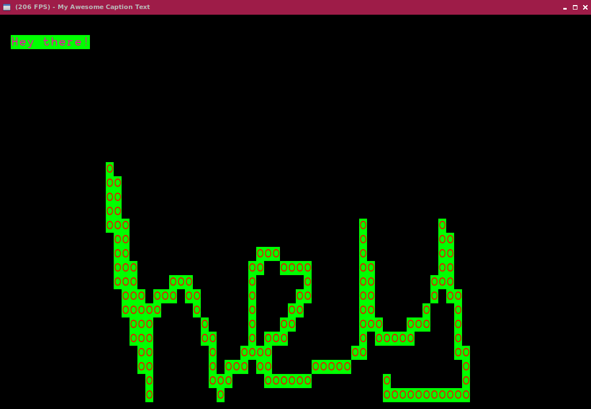

Portfolio
Personal Projects
Projects I've worked on / working on. I've been using Rust a lot more lately rather than C or C++.
Egg Rpg [WIP] (Rust) (github page)
A simple 2d tile based RPG game with gameboy inspired visuals. Currently you can pretty much only move around the map and enter buildings.
WordySRS (Rust, HTML, CSS, Javascript, Docker) (github page)
The idea was to create something that could ingest all of the foreign language media that you've been reading with little effort on your part and present you with SRS cards for learning the vocab present in your reading material. This came about as I realized how much time it was taking to write up Anki cards whenever I was reading something. It was taking the joy out of the actual reading. This application takes in the entire text of whatever you have been reading, splits it into sentences and keeps track of the total word frequency. It then presents you with sentences for each vocab word in the material in it's database, highest frequency first, making sure the sentences it shows has the fewest 'new' words so that you don't get bogged down in irrelevant low frequency words.
Noroi [WIP] (C, C++, Haskell) (github page)
A modern library for creating ASCII based text games similar to dwarffortress, rogue, etc. It uses a server/client model to separate rendering from any game logic. The server represents the screen (or the terminal) and the client represents the game / program. The library uses libzmq to handle communication between the server and client, and is capable of interthread (client and server in the same program), interprocess (client and server being separate programs) and network (client and server on different computers) communication.
Currently there is only one server, a server written using glfw and opengl 3.0, although other servers could be easily written by simply accepting the same communication protocol.
A WIP haskell binding exists here.
libOrange [WIP] (C++) (github page)
Yet another cross platform opengl framework. The goal here was to create something similar to SFML completely from scratch, that could be used for gamejams in the future.
Currently supports opengl 3.0 context creation, keyboard and mouse input for windows and linux. Helper classes available for framebuffers, meshes, shaders, spritebatches, textures and texture atlases.
University Projects
Projects whilst I worked on my Computer Games Programming degree at The University of Derby (2010-2014).
Knife and fork (C#, XNA) (github page)
A game made for the final module for the first year of university. Our design goal was asymmetrical gameplay.
One player plays as a knife and the other as a fork. Their goal is to work together to collect required pieces of food to the dinner plate, although it won't be easy as this food fights back.
Features a component based enemy design that allows them to be cut up into pieces and their functionality breaks up appropriately. Cut of their wings and the part without the wings will fall, cut off their fuse and and the part without won't explode, etc.
Dokuro3D [Software Renderer] (C++) (github page)
A software renderer written for a university module in our second year, using the win32 API and GDI.
2D shooter with STRIPS planning AI (C++, SFML) (github page)
As part of an AI module in the final year, I created this simple 2D shooter as a test for implementing AI planning (based on GOAP originally used in F.E.A.R). The goal was to have a top down arena style shooter with AI that would duck for cover, acquire amnunition and health, and seek out and eliminate competition.
Pillowdrift (2012-2013) (site)
As part of a year of work experience during my university degree, myself and 3 other friends got together and created our own games company.
Mega Driller Mole (Java, libGDX) (android) (windows/mac/linux)
Our first game release, dig for gems with your drill whilst avoiding demons, mines, worms and worse to surface and deposit your treasure into the train following you above. Gain bonus points for getting more height.
Stellar Swing (Stellar Void) (C#, Unity3D) (android) (windows)
Our second game release, play as a mining drone with a laser grapple and swing your way to the end of the level.
Rocket Dodger (C#, Unity3D) (github page) (play online)
A small mobile game we didn't have enough time to finish during our years work experience. A fun little game in which the goal is to avoid being hit by heat seeking rockets. Gain boost by doing risky / cool things such as getting close misses, rockets closely tailing you or even destroying rockets by allowing them to crash into each other.
Click and drag with your mouse to move your player around, hold right click to use your boost.
Loyd's Tale [Ludum Dare] (C#, XNA) (download) (ludum dare)
A short 2D platformer game made in 48 hours.